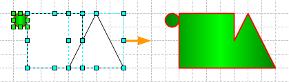

Способы выделения фигур в Visio 2000, Visio 2002.
 В Visio первый объект выделяется ярко-зеленой обводкой. Это аксиома. Хотя цвет этой обводки можно изменить.
В Visio первый объект выделяется ярко-зеленой обводкой. Это аксиома. Хотя цвет этой обводки можно изменить.
Все последующие выделяемые объекты выделяются бирюзовым, но только до тех пор, пока количество выделенных объектов не станет больше определенного значения. После этого они все, включая первый выделенный объект, выделяются розовым цветом.
При работе с «Операциями» над фигурами необходимо знать, какая фигура была выделена первой, т.к. стиль именно первой фигуры будет определять стиль фигуры, полученной после преобразования.
К примеру, создадим 2 совершенно разные фигуры.
В зависимости от того, какая фигура будет выделена первой, все настройки этой фигуры будут применены к объединенной фигуре.
И получается, что если есть хоть маленький кусочек фигуры и если его выделить первым, то полученная фигура будет в точности как этот маленький кусок. В этом случае отпадает надобность в постоянной настройке всех объединяемых частей!

Теперь рассмотрим множественное выделение объектов. В количестве, например, 200 фигур. Поштучно выделять их нет смысла. Тогда просто захватываем их контуром выделения и все.
Но как узнать, какая из фигур выделена первой? Ведь именно по ней будет оформляться полученная фигура.
В этом случае можно поступить так, сначала выделить первую фигуру, а потом закрыть сеткой выделения остальные фигуры. Это самый простой способ выйти из ситуации. Но может просто стоит один раз разобраться в методе работы выделения фигур в Visio, если возникнет более сложная ситуация.
Каждая фигура в Visio находится на своем слое. Т.е. если не вкладывать в это выражение «Слои» самого Visio, то можно выстроить такую картину формирования изображения в Visio.
Получается, что первая нарисованная фигура размещается поверх листа. Вторая нарисованная фигура размещается поверх первой и т.д. Вот почему, когда выбираем сначала верхнюю фигуру (т.е. предположительно, последнюю начерченную) и сделав выбор мышкой еще раз, выбор перемещается на слой ниже, т.е. на предыдущую фигуру.
Если делать паузы между выборами фигур, то можно спокойно «добраться» до листа, т.е. «прощелкать» весь путь сверху до низа. Получается, что самая ранняя, т.е. фактически самая первая фигура и будет в самом низу нашего выбора. Прямо как в стопке листов, самый первый лист на самом дне стопки. И программа также делает выбор первой фигуры, т.е. на самом нижнем слое самая первая фигура.
Поэтому, чтобы дать выбрать программе самую первую фигуру, надо ее просто сделать самой нижней. Если теперь, зная это, вторым нажатием с зажатой клавишей Shift отменить выбор первой фигуры, то первой фигурой станет самая нижняя из выбранных, в отличие от ручного выбора, где сам пользователь задает порядок выбора элементов.
Именно так и работает механизм автоматического выделения.
Теперь рассмотрим принцип ручного последовательного выделения фигур.
Выделим для начала первую фигуру
(равно как и повторное выделение этого элемента ведет к отмене его выделения, т.е. первое нажатие выделяет, второе отменяет, третье снова выделяет и т.д., но только в том случае, если за фигурой нет других фигур).
Вторым нажатием левой кнопкой мыши с зажатой клавишей Shift происходит выделение второй фигуры
И даже в этом случае если отменить выбор первой фигуры, тогда первой фигурой станет вторая фигура, вне зависимости от ее дальности или на сколько слоев она отстоит от листа.
Получается вот что: при автоматическом выделении фигур, порядок определяется дальностью от листа, а при ручном порядок определяется строго пользователем, и при отмене выделения у первого элемента именно это правило будет назначать новый первый элемент.

Все это кажется сложным, но все это реально применимо.
Например, надо выделить 20 объектов из 22. Проще, наверное, выделить 22 и отменить выделение у 2-х, нежели выделять последовательно 20 фигур.
Все это более чем применимо и в Visio 2003, но просто немного отличается от всего вышеописанного...
Советы по работе с программой.
- Как можно быстро подсчитать количество разных фигур на слое? Можно сначала произвести выделение по слою и использовать макрос подсчета. Но в окне Настройки слоя, между названием и видимостью есть кнопка подсчета элементов на слое. Одно нажатие и будут выведены количества фигур всех текущих слоев.
- Как можно быстро подсчитать количество фигур в группе? Можно вручную, но можно и некоторые не заметить или если группа содержит группу, то это вообще трудновыполнимо… Проще сделать так: сгруппировать нужную фигуру, создать новый документ, скопировать туда эту группу, нарисовать стандартными средствами прямоугольник и посмотреть его ID. Тогда количество фигур будет меньше этого числа на 1 (ID прямоугольника). Почему не на 2? Очень просто: если эта фигура будет использована в качестве мастера, то при добавлении на лист фигуры все равно будут сгруппированы.
Статьи: 1 2 3 4 5 6 7 8 9 10 11 12 13 14 15 16 17 18 19 20 21 22 23 24 25 26 27 28 29 30
В начало раздела
Автор: Ничков Алексей (a.k.a. Digitall)